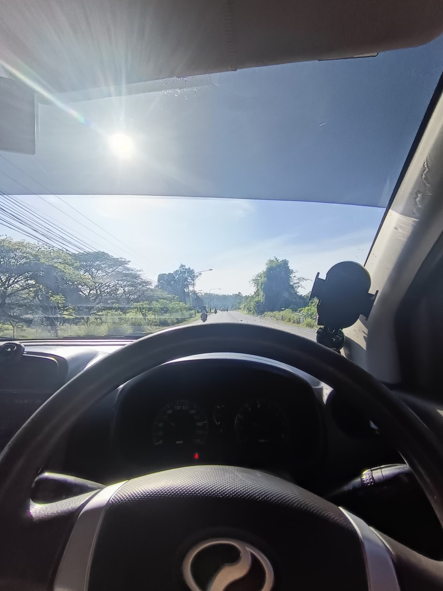

University Student Transport Driver
Student transportation services

I provided transportation services for university students, making sure that passengers were picked up and dropped off safely and on time.
This experience strengthened my time management skills and taught me the importance of punctuality and responsibility.